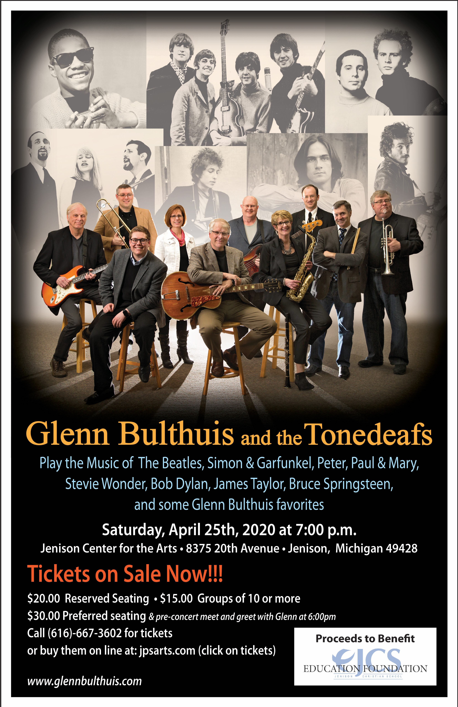

The April 25 concert at the Jension Center for the Arts has been postponed.
The new concert date is Friday, October 9, 2020 at 7:00 p.m.
Any tickets purchased for the original concert date will be honored in October.
If you would like a refund, please contact the Jenison Center for the Arts.
April 25, 2020: 7:00 p.m.
Glenn Bulthuis and the Tonedeafs
Play the Music of the Beatles, Simon and Garfunkel, Peter, Paul and Mary, Stevie Wonder, Bob Dylan, James Taylor, Bruce Springsteen and some Glenn Bulthuis favorites
With Chris Hansen’s Horns

This is a Benefit Concert for Jenison Christian School.
Saturday night, April 25, 2020: 7:00 p.m.
At the Jenison Center for the Arts
8375 20th Avenue Jenison, Michigan 49428
We’ll have a 12-piece band for this concert.
Tickets on Sale Now!!!
Call: 616-667-3602 for tickets.
Or buy tickets on line at: jpsarts.com (click on tickets)
I look forward to seeing you on April 25.
For info call: 616-890-8725
or E-mail: glennbulthuis@comcast.net